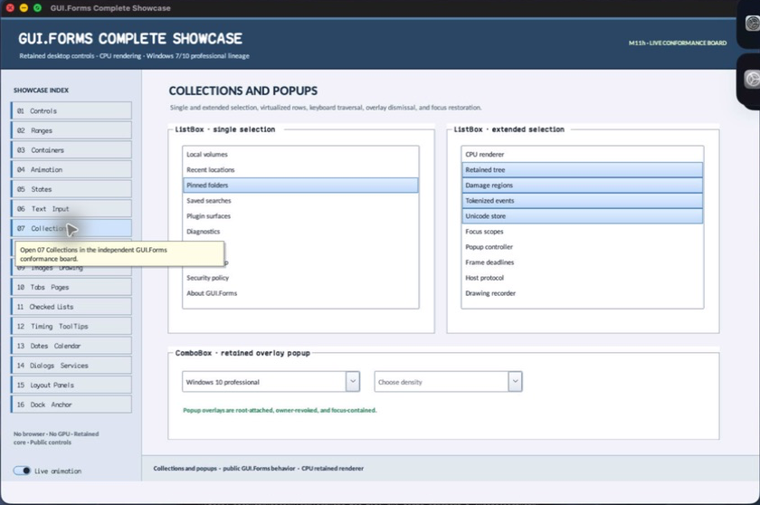

class · visual
ListBox
ListBox is a retained virtual-row selector with single, multi-simple, and multi-extended policies; stable item identities; scroll-window projection; keyboard/pointer range selection; activation; and virtual child semantics.
Visual evidence

Ownership and hierarchy
- Hierarchy
- Panel → ListBox
- Declaration
- include/gui_forms/controls/panel/list_box/list_box.hpp:26
- Definition
- src/controls/panel/list_box/list_box.cpp
Declared methods
ListBox public
explicit ListBox(StableId stable_id)Constructs a focusable clipped row surface with vertical scrolling and collection semantics.
items public
[[nodiscard]] std::span<const std::string> items() const noexceptReturns the authoritative ordered display strings.
set_items public
virtual void set_items(std::vector<std::string> items)Replaces the collection, repairs identity/selection/scroll state, and publishes only real selection changes.
add_item public
virtual void add_item(std::string item)Appends one display item with a deterministic identity and invalidates layout, paint, and semantics.
remove_item public
virtual void remove_item(std::size_t index)Removes a valid row, shifts selection and identity state, and reports whether removal occurred.
clear_items public
virtual void clear_items()Clears rows, identities, selection, active anchor, and scroll position atomically.
set_item_stable_ids public
void set_item_stable_ids(std::vector<std::string> stable_ids)Installs caller-provided unique nonzero row identities after exact cardinality validation.
item_stable_id public
[[nodiscard]] std::string item_stable_id(std::size_t index) constReturns the durable semantic identity for a valid row.
selection_mode public
[[nodiscard]] ListSelectionMode selection_mode() const noexceptReturns the active none, single, multi-simple, or multi-extended policy.
set_selection_mode public
void set_selection_mode(ListSelectionMode mode)Validates policy and reconciles existing selection to its admitted cardinality.
selected_indices public
[[nodiscard]] std::span<const std::size_t> selected_indices() const noexceptReturns selected row indexes in ascending order.
selected_index public
[[nodiscard]] std::optional<std::size_t> selected_index() const noexceptReturns the active selected row or no value when selection is empty.
select_index public
void select_index(std::size_t index, bool extend = false, bool toggle = false)Applies programmatic selection using the current selection-mode law.
clear_selection public
void clear_selection()Clears selected rows and publishes a typed old/new selection transition.
top_index public
[[nodiscard]] std::size_t top_index() const noexceptReturns the first row projected into the viewport.
set_top_index public
void set_top_index(std::size_t index)Constrains a requested first row to the available collection and viewport.
item_height public
[[nodiscard]] double item_height() const noexceptReturns the logical fixed row height.
set_item_height public
void set_item_height(double height)Accepts a finite bounded positive height and invalidates scrolling, layout, and paint.
font public
[[nodiscard]] FontSpec font() const noexceptReturns the retained row FontSpec.
set_font public
void set_font(FontSpec font)Validates row typography and invalidates measurement, paint, and semantics.
selection_changed public
[[nodiscard]] Event<const ListSelectionChange&>& selection_changed() noexceptReturns typed old/new index collections after selection commits.
item_activated public
[[nodiscard]] Event<std::size_t>& item_activated() noexceptReturns the event published for qualified double-click or keyboard activation.
on_paint public
void on_paint(Painter& painter, Rect local_damage) overrideRecords only visible rows with alternating, hover, selection, focus, text, and extension adornment states.
arrange public
void arrange(Rect final_bounds) overrideUpdates viewport geometry and vertical scroll extent from row count and fixed height.
on_pointer public
void on_pointer(PointerEvent& event) overrideMaps pointer gestures to rows, focus, selection-mode modifiers, scrolling, and activation.
on_key public
void on_key(KeyEvent& event) overrideImplements navigation, home/end/page movement, range extension, toggling, activation, and type-independent selection.
on_focus_changed public
void on_focus_changed(bool focused) overrideCommits the focus cue and invalidates active-row painting.
semantic_descriptor public
[[nodiscard]] SemanticDescriptor semantic_descriptor() const overrideProjects a list role with selection cardinality and active value.
semantic_virtual_children public
[[nodiscard]] std::vector<SemanticNode> semantic_virtual_children() const overrideExposes every logical row as a stable selectable virtual option independent of viewport realization.
on_semantic_child_action public
bool on_semantic_child_action(std::string_view stable_id, SemanticAction action, std::string_view value) overrideMaps row select/press actions to the same selection and activation state machine.
row_text_left protected
[[nodiscard]] virtual double row_text_left() const noexceptReports the current row text left value without mutation.
paint_row_adornment protected
virtual void paint_row_adornment(Painter& painter, std::size_t index, Rect row_bounds, bool selected, bool focused) constReports the current paint row adornment value without mutation.
active_index_for_extension protected
[[nodiscard]] std::optional<std::size_t> active_index_for_extension() const noexceptReports the current active index for extension value without mutation.
focused_for_extension protected
[[nodiscard]] bool focused_for_extension() const noexceptReports the current focused for extension value without mutation.
index_at protected
[[nodiscard]] std::optional<std::size_t> index_at( Point absolute) const noexceptReports the current index at value without mutation.
apply_selection private
void apply_selection(std::vector<std::size_t> selection, std::optional<std::size_t> active)Executes ListBox's apply selection operation against retained state; the signature records its exact inputs, result, constness, and failure surface.
ensure_visible private
void ensure_visible(std::size_t index)Executes ListBox's ensure visible operation against retained state; the signature records its exact inputs, result, constness, and failure surface.
visible_row_count private
[[nodiscard]] std::size_t visible_row_count() const noexceptReports the current visible row count value without mutation.